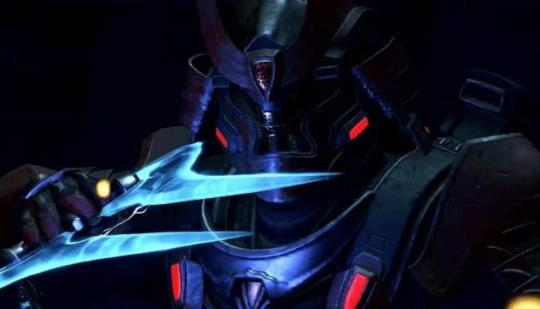
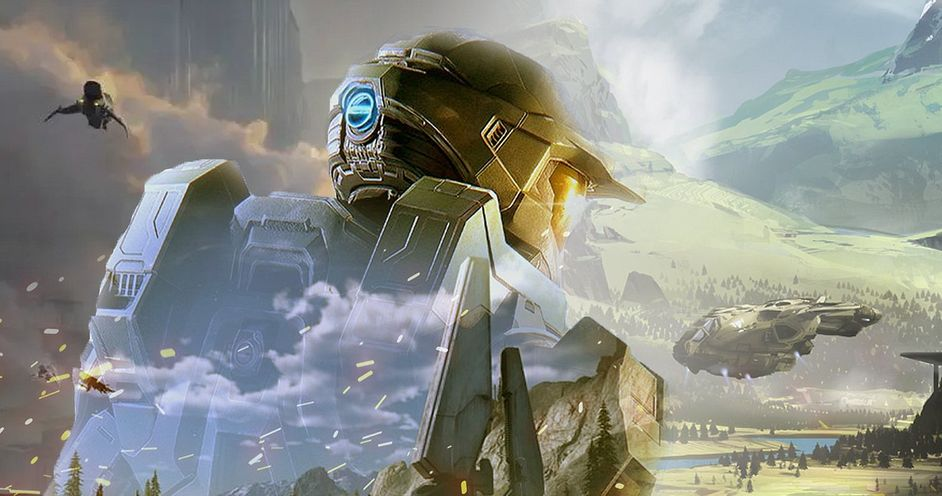

Welcome to the Halo Infinite Hype Page!
This web page is dedicated to the joy that we all felt seeing the Halo Infinite trailers and every press release leading up to the December 2021 release date! This installment of the most iconic multiplayer series of all time is returning to the roots of what made us fall in love with the halo series. And this page is all about highlighting the exciting things coming to Halo Infinite that let us relive the games before it in a new way.

Halo Infinite Media
Listen to Halos iconic theme music and equally iconic background music as well as watching both the Campaign Trailer and Multiplayer Trailer for Halo Infinite. Set to release in December of 2021!
 View MediaThe Art of Halo Infinite
As fans we know that both bungie studios and 343 industries have produced the most beautiful artwork for their entries in the Halo series. Take a look at a few early concept artwork for Halo Infinite and be amazed at the beauty of this universe.
 See GalleryHalo Infinite FAQ
The Halo Infinite FAQ is home to some frequently asked questions that we have the answers to whether its if cross play is added to Halo Infinite upon release or if Halo Infinite will have microtransactions. We have the answers here on the FAQ page.
Visit FAQ